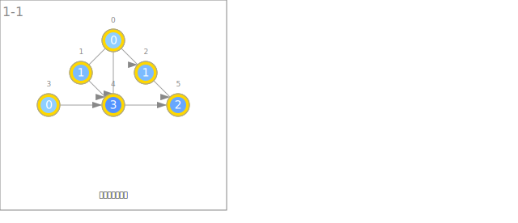
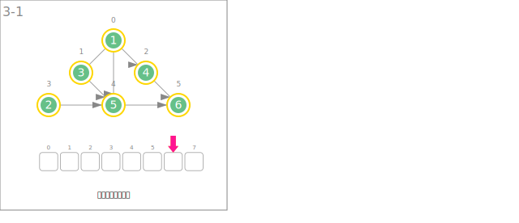

シンボル
| データ | ||
|---|---|---|
 | 節點的入分支度 | deg |
| 排序完成的順序 | order | |
| 初始化入分支度 | ||
|---|---|---|
 | 計算入分支度。 | |
| 排序 | ||
 | 將入分支度為 0 的節點插入佇列。 | que.enqueue(v) |
 | 從佇列中取出入分支度為 0 的節點，並固定其順序。 | u ← que.dequeue() order[u] ← t++ |
 | 將相鄰節點的入分支度減 1。 | deg[v]-- |
 | 擴大已排序完成的節點群組。 | order 已確定的節點 |
| 輸出排序結果 | ||
| 輸出節點的順序。 | ||
アニメーション
初始化入分支度

排序

輸出排序結果
